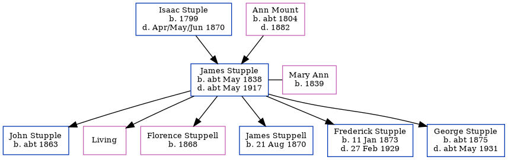

James Stupple cMay 1838 - c1917
[ Home ] | [ Calendar ] | [ Surnames Index ] | [ Errors ] | [ Family History ]A mariner and the child of Isaac Stuple and Ann Mount, James Stupple, the three times great-uncle of Nigel Horne, was born in Herne Bay, Kent, England c. May 18381,2,3,4, was baptised in Herne, Kent, England on 2 Sept 1838 and had 6 children with Mary Ann: John, Ada E, Florence Eliza, James Henry, Frederick and George Edward, along with 1 surviving child.
During his life, he was living in Herne in 18511, at Queen Street in Herne Bay on 2 Apr 18719, at 10 Victoria Terrace in Herne Bay on 3 Apr 18817 and on 5 Apr 18916, and at his birthplace on 2 Apr 19112.
He died c. May 1917 in Blean, Kent, England5.
Parents
- Isaac was born in 1799
- Ann was born c. 1804
Children
- John was born c. 1863
- Florence Eliza was born in 1868
- James Henry was born on 21 Aug 1870
- Frederick was born on 11 Jan 1873
- George Edward was born c. 1875
Citations
- 1851 England Census Online publication - Provo, UT, USA: The Generations Network, Inc., 2005.Original data - Census Returns of England and Wales, 1851. Kew, Surrey, England: The National Archives of the UK (TNA): Public Record Office (PRO), 1851. Data imaged from the National
- 1911 England Census Online publication - Provo, UT, USA: Ancestry.com Operations, Inc., 2011.Original data - Census Returns of England and Wales, 1911. Kew, Surrey, England: The National Archives of the UK (TNA), 1911. Data imaged from the National Archives, London, England.
- England & Wales births 1837-2006 - Findmypast
- England & Wales, FreeBMD Birth Index, 1837-1915 Online publication - Provo, UT, USA: The Generations Network, Inc., 2006.Original data - General Register Office. England and Wales Civil Registration Indexes. London, England: General Register Office. © Crown copyright. Published by permission of the Cont
- England & Wales deaths 1837-2007 - Findmypast
- 1891 England, Wales & Scotland Census - Findmypast (was age 52 and the head of the household)
- 1881 England, Wales & Scotland Census - Findmypast (was age 40 and the head of the household)
- 1911 Census for England & Wales - Findmypast (was age 72 and the father of the head of the household)
- 1871 England, Wales & Scotland Census - Findmypast (was age 31 and the head of the household)
Media
1891 England, Wales & Scotland Census - GBC/1891/0005763922
1881 England, Wales & Scotland Census - GBC/1881/0004745120
England & Wales births 1837-2006 - BMD/B/1838/2/AZ/000863/086
England & Wales deaths 1837-2007 - BMD/D/1917/2/AZ/000951/045
Family Tree
Map
Generated by ged2site. Last updated on Jul 3, 2024
Known Issues
Surname is different from both parents
May have been living with mother on 1851, but the addresses don't match or aren't detailed enough to be sure
May have been living with father on 1851, but the addresses don't match or aren't detailed enough to be sure
Census information missing between 1851 England Census and Census UK 1871
Census information missing between Census UK 1891 and Census UK 1911